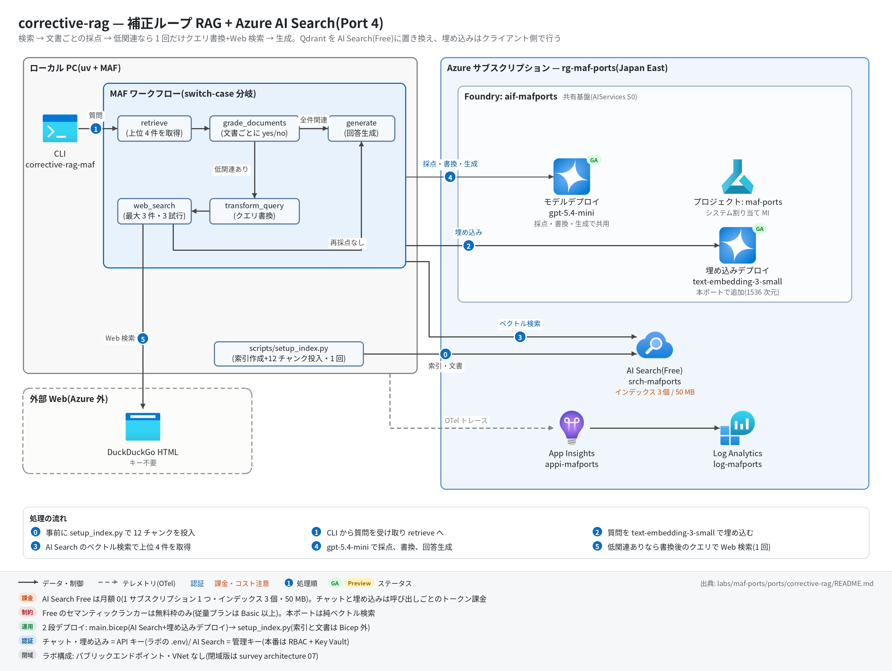

corrective-rag 実行ガイド
対象:
labs/maf-ports/ports/corrective-rag/(Port 4・パターン: 補正ループ RAG — switch-case 分岐+Azure AI Search Free+クライアント側埋め込み)
最終確認: 2026-09-29 オフライン(37 passed・ruff clean・依存 agent-framework-core 1.19.0 / agent-framework-openai 1.14.4 / openai 3.20.0 / azure-search-documents 12.0.0)/ ライブ: 2026-07-31(当時の構成。Azure リソースは削除済み — 再デプロイ手順は §5)
正は本 Markdown。 人間用 HTML(同じディレクトリのrunbook.html)はpython3 labs/tools/build_runbooks.pyで生成する(HTML は直接編集しない)。設計判断と移植の学びは README。
1. このパターンで確かめること
- 質問 → ベクトル検索(上位 4 件)→ 文書ごとの yes/no 採点 → 全件関連なら直接
generate、1 件でも低関連ならtransform_query(クエリ書換)→web_search(DuckDuckGo・最大 3 件)→generate、という2 経路の分岐が switch-case エッジで起きること。 - 補正パスは最大 1 回(再採点・再書換なし)。「補正ループ」という名前に反して元実装どおりの一方向 DAG で、グラフ構造そのものが上限になっていること。
- Qdrant → Azure AI Search の置換で、埋め込みモデルのデプロイ・次元数(1536)・インデックス投入(データプレーン)が自分の設計項目になること(README 学び 2)。LangGraph の共有 dict が MAF の型付きメッセージに分解される点は README 学び 1。
2. 構成

| コンポーネント | 役割 | 課金 |
|---|---|---|
MAF Workflow(ローカル、workflow.py) |
retrieve → grade_documents →(switch-case)→ generate / transform_query → web_search → generate | なし |
| モデルデプロイ gpt-5.4-mini(共有基盤) | 採点(response_format=GradeScore)・書換・生成の 3 役割で共用 |
トークン従量(採点は検索件数ぶん呼ばれる) |
埋め込みデプロイ text-embedding-3-small(本ポートの infra/main.bicep が共有 Foundry に追加) |
投入時(setup_index.py)とクエリ時(OpenAIEmbedder)のクライアント側埋め込み |
トークン従量(微小) |
Azure AI Search srch-<baseName>(Free SKU) |
純ベクトル検索(HNSW・1536 次元・インデックス corrective-rag) |
無料(1 サブスクリプション 1 つまで) |
| DuckDuckGo HTML(Azure 外) | Web 検索フォールバック(キー不要、3 試行・4s/8s 待ち) | なし |
App Insights appi-<baseName>(共有基盤) |
OTel トレースの送信先 | 取り込み量従量(少量) |
3. 前提
| 区分 | 必要なもの | 備考 |
|---|---|---|
| ツール | uv(Python は uv が取得。検証は 3.13) | オフライン実行はこれだけ |
| Azure(ライブのみ) | 共有基盤(infra/shared.bicep)+本ポート固有: AI Search(Free)と text-embedding-3-small デプロイ(infra/main.bicep) | Free Search は 1 サブスクリプションに 1 つまで。既に別の Free があると作成に失敗する |
| 権限 | デプロイ先 RG の共同作成者(共有 Foundry アカウントへのデプロイ追加を含む)。実行時の認証は API キー(Foundry・AI Search とも)なので、データプレーンの RBAC 付与は不要 | 本番は RBAC / Key Vault(README 参照) |
環境変数(labs/maf-ports/.env。雛形は .env.example。ライブ実行時のみ必要。AZURE_SEARCH_* は雛形に無いので手で追記する):
| 変数 | 用途 | 取得元 |
|---|---|---|
FOUNDRY_OPENAI_V1_ENDPOINT |
チャット・埋め込みの呼び先(https://<foundry>.openai.azure.com/openai/v1) |
shared.bicep / main.bicep の出力 openaiV1Endpoint |
FOUNDRY_MODEL |
チャットモデルのデプロイ名(例: gpt-5.4-mini) |
shared.bicep の出力 modelDeploymentName |
FOUNDRY_API_KEY |
Foundry の API キー | az cognitiveservices account keys list -n aif-<baseName> -g <rg> |
AZURE_SEARCH_ENDPOINT |
AI Search のエンドポイント | main.bicep の出力 searchEndpoint |
AZURE_SEARCH_ADMIN_KEY |
AI Search の管理キー(インデックス作成・検索の両方に使用) | main.bicep の出力 searchAdminKey |
FOUNDRY_EMBEDDING_MODEL(任意) |
埋め込みデプロイ名 | 既定 text-embedding-3-small(main.bicep の出力 embeddingDeploymentName) |
AZURE_SEARCH_INDEX(任意) |
インデックス名 | 既定 corrective-rag |
APPLICATIONINSIGHTS_CONNECTION_STRING(任意) |
トレース送信先。未設定ならトレース無効で実行は続く | shared.bicep の出力 appInsightsConnectionString |
4. オフライン実行(Azure 不要・無料)
cd labs/maf-ports/ports/corrective-rag
uv sync --extra dev
uv run pytest # 期待: 37 passed, 1 deselected(live は既定で除外。ネットワーク不要)
uv run pytest -W error::DeprecationWarning # 期待: 37 passed(非推奨 API の混入検知)
uv run ruff check . # 期待: All checks passed!オフラインテストが固定している主な挙動:
- 全文書が関連 → 書換・Web 検索なしで直接生成(
test_all_relevant_generates_directly)/ 1 件でも低関連 → 書換 → Web 検索 → 生成(test_low_relevance_triggers_rewrite_and_web_search) - 補正パスは 1 回だけで、Web 結果は再採点されない(
test_single_corrective_pass_no_regrade_or_rerewrite) - 採点がパース不能なら安全側に文書を残す(
test_unparseable_grade_keeps_document)。ネイティブ構造化出力.valueが優先される(test_grader_native_value_path) - 検索 0 件のときは Web 検索に行かず空コンテキストで直接生成する元実装の癖を保存(
test_empty_retrieval_goes_direct_with_empty_context) - Web 検索が 3 試行とも失敗 / 0 件でも、残った文書だけで生成まで進む(
test_web_search_failure_still_generates_with_filtered_docs/test_web_search_empty_results_appends_nothing)。リトライ待ちは 4s → 8s(tests/test_search.py) - 進捗イベントが経路どおりに出る(
test_progress_events_direct_route/test_progress_events_corrective_route)
5. ライブ実行(Azure 必要・課金あり)
5.1 デプロイ
# (1) 共有基盤が未作成なら先に作る(詳細は labs/maf-ports/README.md「実行の前提」)
cd labs/maf-ports
az group create -n rg-maf-ports -l japaneast
az deployment group create -g rg-maf-ports -f infra/shared.bicep \
-p baseName=mafports modelName=gpt-5.4-mini modelVersion=2026-03-17 modelCapacity=10
# モデル名・版は docs/survey/features/02-models.md で現行を確認(上は 2026-09-29 時点の例)
# (2) 本ポート固有: AI Search(Free)+ text-embedding-3-small デプロイ
cd ports/corrective-rag
az deployment group create -g rg-maf-ports -f infra/main.bicep -p baseName=mafports
az deployment group show -g rg-maf-ports -n main --query properties.outputs
# → searchEndpoint / searchAdminKey を ../../.env の AZURE_SEARCH_ENDPOINT / AZURE_SEARCH_ADMIN_KEY に転記main.bicep のパラメータ: baseName(必須。shared.bicep と同じ値)/ searchServiceName(既定 srch-<baseName>、グローバル一意)/ embeddingModelName(既定 text-embedding-3-small)/ embeddingModelVersion(既定 1)/ embeddingCapacity(既定 10 = 10K TPM)。
5.2 インデックス作成と実行
uv sync --extra dev --extra live
uv run python scripts/setup_index.py --recreate # data/*.md を埋め込んで投入(再実行は --recreate なしでも冪等な upsert)
uv run corrective-rag-maf "Azure AI Search の Free レベルにはどんな制約がありますか?"
uv run corrective-rag-maf --json "Azure AI Search の Basic レベルは月額いくら?" # 補正パス期待
uv run corrective-rag-maf --top-k 6 "Foundry Agent Service の組み込みツールは?" # 取得件数の変更
uv run pytest -m live # ライブスモーク(インデックス作成済みが前提)期待される出力の例(値は実行ごとに変わる。CLI の書式と 2026-07-31 ライブ結果から作った形の例):
$ uv run python scripts/setup_index.py --recreate
deleted index: corrective-rag ← 初回は "no existing index to delete"
index ready: corrective-rag (https://srch-mafports.search.windows.net)
chunked 4 files into 12 chunks
embedded with text-embedding-3-small
uploaded 12/12 chunks
$ uv run corrective-rag-maf "Azure AI Search の Free レベルにはどんな制約がありますか?"
tracing: App Insights 有効
[retrieve] 4 docs
[grade] kept=1 dropped=3 → transform query + web search ← 全件 yes なら "→ generate"
[transform_query] 'Azure AI Search の Free レベルには…' → 'Azure AI Search Free tier limitations …'
[web_search] 3 results ← 失敗時は "[web_search] failed"
<回答本文(stdout)>
(corrective path: query rewritten to '…', web results: 3)--json の出力は question / original_question / answer / corrected / documents / grades(文書ごとの yes / no / error-kept)/ web_result_count(直行時は null)/ web_search_failed。
6. 確認観点
| 確認 | # | 観点 | 確認方法 | 期待結果 |
|---|---|---|---|---|
| 1 | 正常系: インデックス投入 | uv run python scripts/setup_index.py --recreate |
uploaded 12/12 chunks(2026-07-31 のライブ時は 11 チャンク。コーパス訂正で 12 に)。終了コード 0 |
|
| 2 | 正常系: コーパス内の質問 | §5.2 の 1 問目を実行 | 回答がコーパス(インデックス 3 個・50 MB・セマンティックランカーは無料枠のみ)に沿う。stderr の [grade] 行で経路を確認 — 採点が厳しく in-domain でも補正パスに入ることがある(2026-07-31 は 4 件中 3 件棄却) |
|
| 3 | 分岐: 補正パス | 鮮度依存の質問を --json で実行(§5.2 の 2 問目) |
corrected: true、question が書換後で original_question と異なる、web_result_count が 1〜3、grades に no を含む |
|
| 4 | 補正は 1 回だけ | 同じ実行の stderr | [transform_query] と [web_search] が各 1 行だけ。--json の grades の件数 = [retrieve] の件数(Web 結果は再採点されない) |
|
| 5 | 異常系: Web 検索失敗 | DuckDuckGo がレート制限(202 / 429)を返したとき、またはオフラインテスト test_web_search_failure_still_generates_with_filtered_docs |
[web_search] failed の後も回答が出る。--json の web_search_failed: true |
|
| 6 | 観測: トレース | §7 の KQL | executor.process retrieve / grade_documents / transform_query / web_search / generate と、invoke_agent grader_agent が採点した文書数ぶん並ぶ |
|
| 7 | 評価の下準備(任意) | tests/eval_dataset.jsonl の 7 問を --json で流し、corrected を expected_route(direct / corrective)と突き合わせる |
分岐の当否を観察記録として残す(合否ラインは設けない)。documents+answer+質問は Foundry の Groundedness 評価器の入力になる |
|
| 8 | コスト・後片付け | §8 を実行後 az group show -n rg-maf-ports |
ResourceGroupNotFound。Free Search は月額 0 だが 1 サブスクリプション 1 枠を占有するので、使わないなら消す |
7. トレース・評価の確認
az monitor app-insights query --app appi-mafports -g rg-maf-ports \
--analytics-query "dependencies | where timestamp > ago(30m) | summarize count() by name | order by name asc"- 期待するスパン名:
executor.process retrieve/executor.process grade_documents/executor.process generate(補正パスならexecutor.process transform_query/executor.process web_searchも)、invoke_agent grader_agent(文書数ぶん)/invoke_agent rewriter_agent/invoke_agent generator_agent、各 LLM 呼び出しのchat <model>。 - 取り込みには数分の遅延がある。0 件なら
APPLICATIONINSIGHTS_CONNECTION_STRINGの設定と、CLI の最初の行にtracing: App Insights 有効が出たかを確認。 - 埋め込み(
OpenAIEmbedder)と AI Search の呼び出しは MAF の計装対象外なので、スパンには出ない。
8. 片付け
az group delete -n rg-maf-ports --yes --no-wait # 共有基盤ごと削除(インデックスは setup_index.py で再構築できるのでステートレス)
# 共有基盤を残して本ポート分だけ消す場合
az search service delete -n srch-mafports -g rg-maf-ports --yes
az cognitiveservices account deployment delete -n aif-mafports -g rg-maf-ports --deployment-name text-embedding-3-small9. トラブルシューティング
| 症状 | 原因 | 対処 |
|---|---|---|
error: 環境変数が未設定: AZURE_SEARCH_ENDPOINT, …(終了コード 2) |
.env に AI Search の値が無い(.env.example に載っていない) |
main.bicep の出力 searchEndpoint / searchAdminKey を labs/maf-ports/.env に追記 |
ModuleNotFoundError: azure.search / openai、または aiohttp 関連の ImportError |
--extra live なしで同期した(非同期の azure-search-documents は aiohttp が必要) |
uv sync --extra dev --extra live |
| 検索で 404(index not found) | インデックス未作成、または AZURE_SEARCH_INDEX の食い違い |
uv run python scripts/setup_index.py を先に実行 |
| main.bicep のデプロイで Free の作成に失敗 | 同じサブスクリプションに既に Free の検索サービスがある / リージョンの容量制約 | 既存の Free を削除するか、searchServiceName を既存に合わせず別サブスクリプション・別リージョンで作る |
| しばらく使っていなかったら検索サービスが消えていた | Free は長期間操作がないと削除され得る(公式の制限事項) | main.bicep を再デプロイ → setup_index.py --recreate |
埋め込みで DeploymentNotFound |
埋め込みデプロイ未作成、または FOUNDRY_EMBEDDING_MODEL の不一致 |
main.bicep の出力 embeddingDeploymentName と揃える |
| 投入・検索でベクトル次元のエラー | 埋め込みモデルを 1536 次元以外(例: text-embedding-3-large = 3072)に変えた | retrieval.EMBEDDING_DIMENSIONS を合わせ、--recreate で作り直す |
| Foundry 呼び出しで 401 | FOUNDRY_API_KEY の誤り / アカウントのキー認証が無効 |
キーを取り直す(shared.bicep は disableLocalAuth: false) |
[web_search] failed が続く |
DuckDuckGo のレート制限・ボット判定 | 時間をおく。失敗しても回答は出る(元実装どおりの挙動) |
10. 関連・更新履歴
- 設計判断と学び: README(LangGraph → MAF 対応表・Free SKU の割り切り・補正ループはループしない)
- RAG のアーキテクチャ選定: architecture/04 チャット・RAG / Foundry IQ・AI Search の位置づけ: features/04 ツール・ナレッジ
- 移植規約(テスト・トレース・Bicep の必須要件): PORTING.md
| 日付 | 内容 |
|---|---|
| 2026-09-29 | 初版(agent-framework-core 1.12→1.19 / openai 2.51→3.20 に更新、コード変更なし。「Free はセマンティックランカー不可」の誤記を訂正し、コーパスが 12 チャンクに。図を v2〈日本語+処理順〉に更新) |